Introduction
Miniweather Station Dashboard adalah sistem pemantauan cuaca berbasis IoT yang memungkinkan pengguna untuk melihat data sensor secara real-time dari berbagai lokasi. Sistem ini dirancang untuk mendukung pemantauan lingkungan secara efisien dan terstruktur, serta dapat diskalakan sesuai kebutuhan.
🎯 Tujuan
Dokumentasi ini bertujuan untuk memberikan panduan lengkap bagi administrator dan pengguna teknis dalam:
- Mengelola perangkat IoT (onboarding, konfigurasi)
- Menambahkan dan mengelola tipe sensor
- Mengelola data dan visualisasi
- Menjalankan proses monitoring dan validasi data
- Menggunakan fitur-fitur admin panel secara optimal
⚙️ Komponen Utama Sistem
-
Admin Panel
Antarmuka untuk mengelola perangkat, sensor, artikel, dan pengguna. -
Public Dashboard
Menampilkan data cuaca secara real-time ke publik. -
Backend API
Menangani autentikasi, penyimpanan data, integrasi MQTT, dan pengolahan data. -
MQTT Broker
Menjadi jalur komunikasi antara device IoT dan backend. -
Redis & Hyperbase
Redis digunakan untuk caching data jika Hyperbase offline, sementara Hyperbase menyimpan data secara permanen.
🧭 Struktur Dokumentasi
Dokumentasi ini terbagi ke dalam beberapa bagian penting:
- Installation: Panduan instalasi dan setup awal
- Onboarding Device: Proses menambahkan perangkat ke sistem
- Manage Alerts, Articles & Users: Manajemen konten dashboard dan admin
- API Reference: Detail teknis endpoint
Dengan mengikuti dokumentasi ini, kamu akan dapat mengoperasikan dan mengembangkan sistem Miniweather Station dengan lebih efektif dan efisien.
Panduan Setup Dashboard Miniweather Station
Panduan ini akan membimbing Anda dalam menyiapkan tiga layanan utama: Backend API, Dashboard Publik, dan Panel Admin.
1. Prasyarat
- Pastikan Docker dan Docker Compose telah terinstal.
- Node.js dan npm opsional (jika tidak menggunakan Docker).
- Akses ke proyek Hyperbase dan token yang dibutuhkan.
2. Setup Proyek di Hyperbase
Sebelum menjalankan layanan, Anda perlu menyiapkan token di Hyperbase:
- Masuk ke halaman Hyperbase.
- Buka proyek anda 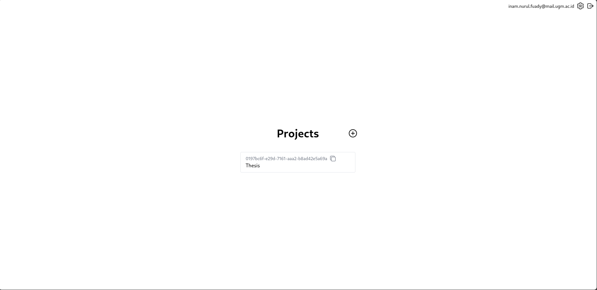
- Buat atau edit Token App. 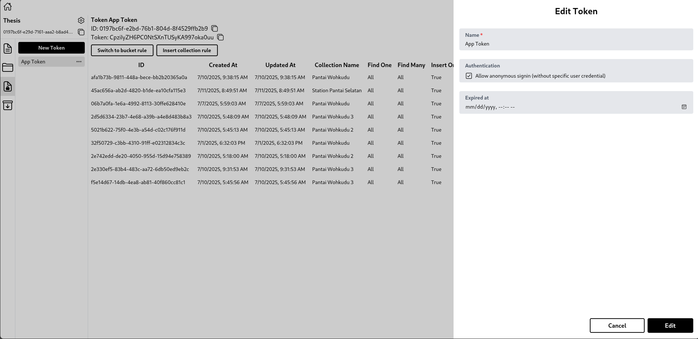
- Aktifkan opsi Allow anonymous signin seperti pada gambar yang tersedia.
- Pastikan token tersebut memiliki akses ke koleksi yang diperlukan (Find One, Find Many, Insert).
Data yang diperlukan:
- Project ID:
0197bc6f-e29d-7161-aaa2-b8ad42e5a69a - Host URL:
http://localhost:8080 - Token ID:
0197bc6f-e2bd-76b1-804d-8f4529ffb2b9 - Bucket ID:
0197bc70-ffc8-7a82-b854-947577abd29e - Auth Token:
eyJ0eXAiOiJKV1QiLCJhbGciOiJIUzI1NiJ9...
3. Clone Repositori
Kloning ketiga repositori berikut:
# Backend API
git clone https://github.com/Miniweather-Station-Dashboard/miniweather-backend-service-node.git
# Dashboard Publik
git clone https://github.com/Miniweather-Station-Dashboard/miniweather-frontend-service-node.git
# Panel Admin
git clone https://github.com/Miniweather-Station-Dashboard/miniweather-adminpage-service-node.git
4. File Environment
📦 Backend API - .env
NODE_ENV=dev
HYPERBASE_PROJECT_ID=0197bc6f-e29d-7161-aaa2-b8ad42e5a69a
HYPERBASE_HOST=http://localhost:8080
HYPERBASE_TOKEN_ID=0197bc6f-e2bd-76b1-804d-8f4529ffb2b9
HYPERBASE_BUCKET_ID=0197bc70-ffc8-7a82-b854-947577abd29e
HYPERBASE_AUTH_TOKEN=eyJ0eXAiOiJKV1QiLCJhbGciOiJIUzI1NiJ9...
MQTT_BROKER_URL=mqtt://localhost:1883
MQTT_TOPIC=backend/miniweather
MQTT_HYPERBASE_TOPIC=hyperbase/dev
DB_USER=myuser
DB_PASSWORD=mypassword
DB_HOST=localhost
DB_PORT=5435
DB_NAME=hyperbase
SCYLLA_CONTACT_POINTS=localhost
SCYLLA_LOCAL_DC=datacenter1
SCYLLA_KEYSPACE=hyperbase
SCYLLA_USERNAME=cassandra
SCYLLA_PASSWORD=cassandra
SCYLLA_PORT=9042
DB_TYPE=scylla
JWT_SECRET=ts4S9QrNzyqcGEdnkCahVKuglhHbh27t
JWT_REFRESH_SECRET=yC5cTGXWDC0A3S7UFfE5C7PFCCtxyyFb
JWT_EXPIRATION=10s
JWT_REFRESH_EXPIRATION=1d
GMAIL_USER=user@gmail.com
GMAIL_PASS=apppassword
REDIS_HOST=localhost
REDIS_PORT=6379
REDIS_DB=0
# Jika Redis memiliki autentikasi
# REDIS_USERNAME=default
# REDIS_PASSWORD=passwordanda
SWAGGER_SERVER_URL=http://localhost:3001
Catatan: Untuk mendapatkan kredensial Gmail (
GMAIL_USERdanGMAIL_PASS), Anda perlu:
- Masuk ke akun Gmail Anda.
- Buka halaman Google App Passwords (Anda harus mengaktifkan verifikasi 2 langkah terlebih dahulu).
- Pilih jenis aplikasi "Mail" dan perangkat "Other (Custom name)", lalu beri nama seperti "Miniweather".
- Google akan memberikan App Password berupa 16 karakter yang digunakan sebagai
GMAIL_PASS.GMAIL_USERadalah alamat email Gmail Anda.
🌐 Dashboard Publik - .env
NEXT_PUBLIC_API_BASE_URL=http://localhost:3001
🛠️ Panel Admin - .env
NEXT_PUBLIC_API_BASE_URL=http://localhost:3001
4.5. Menjalankan Redis Secara Lokal
Sebelum menjalankan layanan backend, pastikan Redis berjalan. Jika Anda menggunakan Docker:
docker run -d \
--name redis-miniweather \
-p 6379:6379 \
redis:7-alpine
Redis akan berjalan di latar belakang pada port default 6379. Anda bisa mengecek statusnya dengan docker ps.
5. Menjalankan Layanan dengan Docker
Pastikan semua service memiliki Dockerfile. Jika belum memiliki docker-compose.yml, Anda bisa menjalankannya manual:
# Backend
cd miniweather-backend-service-node
docker build -t miniweather-backend .
docker run -p 3001:3001 --env-file .env miniweather-backend
# Dashboard Publik
cd ../miniweather-frontend-service-node
docker build -t miniweather-dashboard .
docker run -p 3000:3000 --env-file .env miniweather-dashboard
# Panel Admin
cd ../miniweather-adminpage-service-node
docker build -t miniweather-admin .
docker run -p 3002:3000 --env-file .env miniweather-admin
6. Catatan Tambahan
- Pastikan Hyperbase dapat diakses di
http://localhost:8080 - Redis dan MQTT juga harus berjalan pada port default (
6379dan1883) - Anda bisa menggunakan Docker Compose untuk menjalankan seluruh stack sekaligus jika diinginkan
7. Akses Aplikasi
- Panel Admin:
http://localhost:3002 - Dashboard Publik:
http://localhost:3000 - API Swagger:
http://localhost:3001/docs(jika tersedia)
Selamat mencoba dan semoga lancar!
Add Onboarding Device
Untuk menambahkan perangkat baru (IoT device) ke sistem Miniweather Station Dashboard, ikuti langkah-langkah berikut:
✅ Sebagai Admin (Menambahkan Perangkat lewat UI)
1. Masuk ke Halaman Utama
Setelah masuk ke link panel admin, kamu akan diarahkan ke halaman utama. Tekan tombol admin login
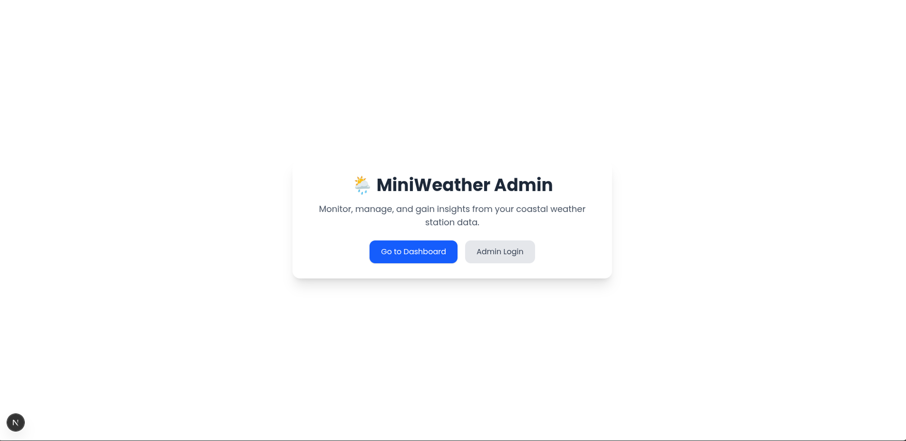
2. Login ke Admin Panel
Buka halaman login admin di /admin/login, lalu masukkan kredensial.
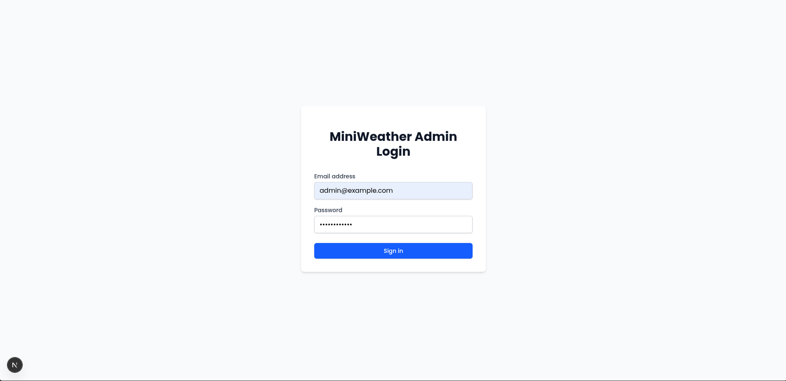
3. Buka Halaman Manajemen Perangkat
Klik menu "Dashboard" untuk membuka halaman pengelolaan perangkat.
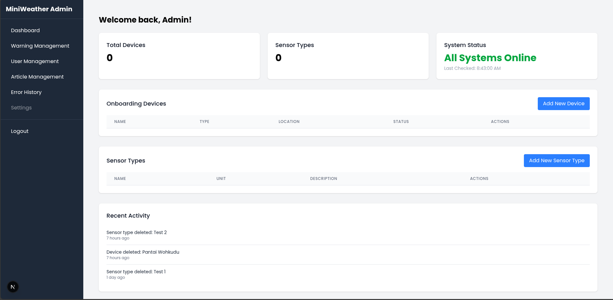
4. Klik Tombol + Add Sensor Types
Tekan tombol + Add Sensor Types untuk membuka form penambahan penambahan sensor.
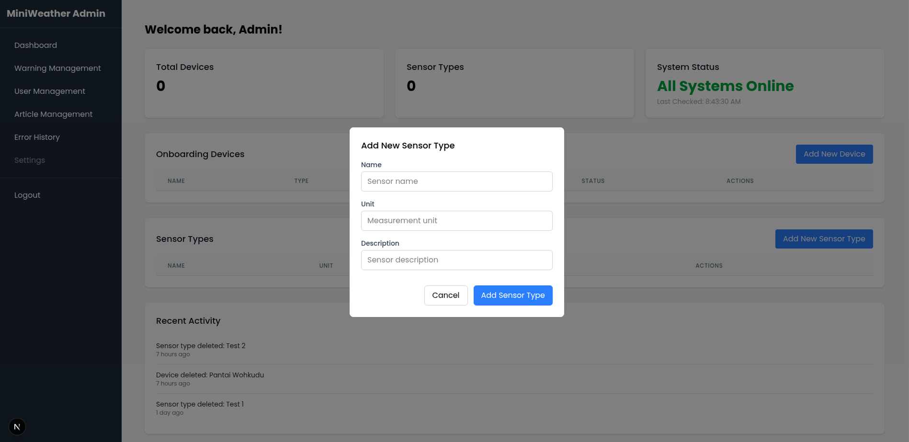
5. Isi Form Penambahan Sensor
Isi data perangkat sesuai dengan form yang tersedia:
- Name (misal:
Temperature) - Unit (unik, misal:
°C) - Description (misal:
Ambient temperature)
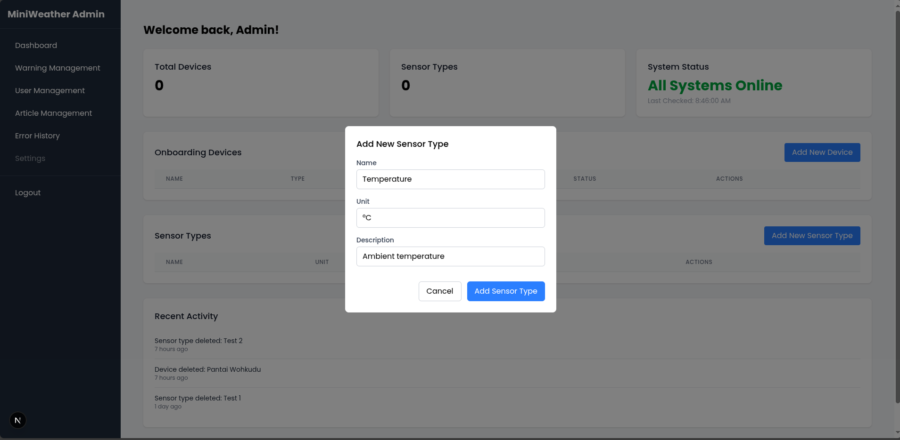
6. Hasil dari Penambahan Sensor
Berikut merupakan sensor yang sudah ditambahkan apabila berhasil 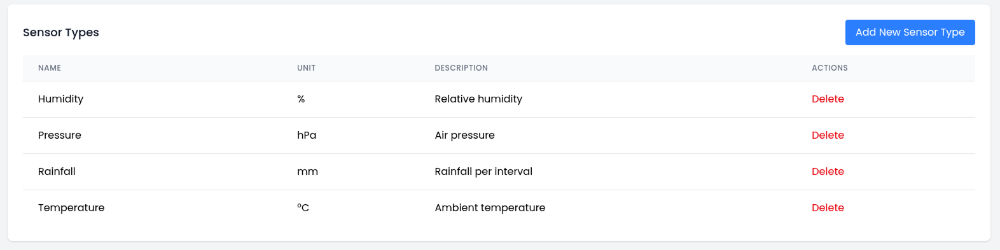
7. Klik Tombol + Add Device
Tekan tombol + Add Device untuk membuka form penambahan.
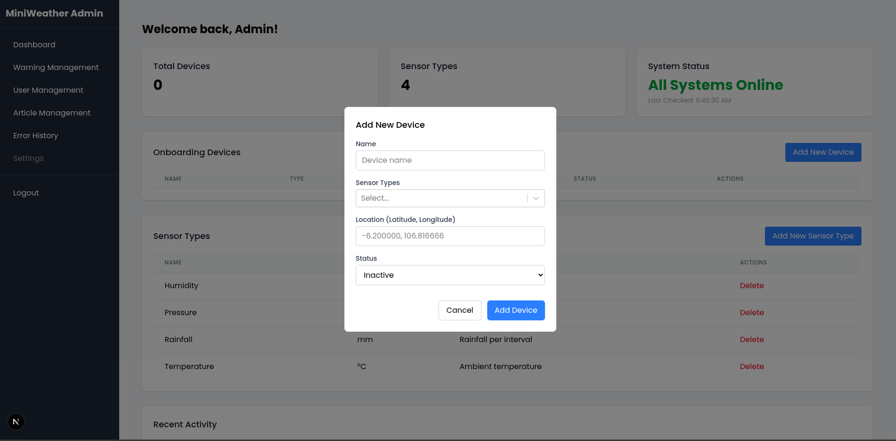
8. Isi Form Penambahan Perangkat
Isi data perangkat sesuai dengan form yang tersedia:
- Device Name (misal:
Station Pantai Selatan) - Location (latitude dan longitude, misal:
-7.7956, 110.3695) - dan seterusnya
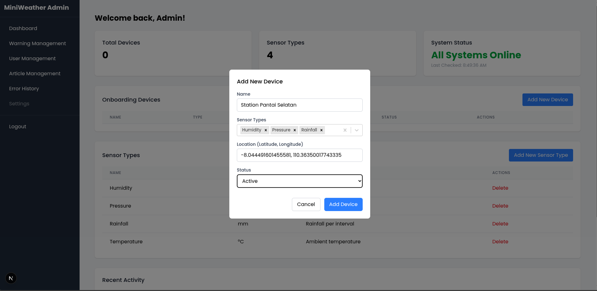
9. Klik Save
Simpan data untuk mendaftarkan perangkat baru ke sistem.
📦 Hasil Setelah Menambahkan Device
Setelah berhasil ditambahkan, data perangkat akan muncul di halaman list device seperti berikut:
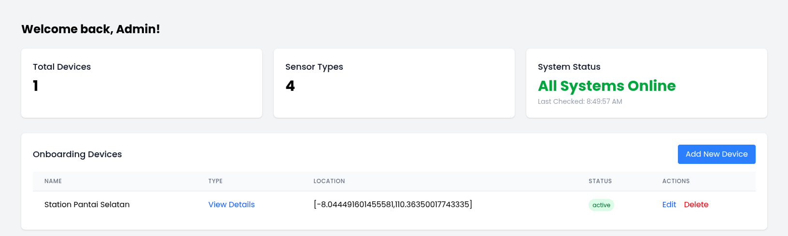
Manage Articles
Halaman ini menjelaskan proses untuk menambahkan dan mengelola artikel yang ditampilkan di halaman publik Miniweather Station Dashboard. Artikel digunakan untuk menyampaikan informasi, edukasi, atau update terkini yang berkaitan dengan cuaca atau lingkungan.
🧭 1. Akses Menu Artikel
Setelah login sebagai admin, buka menu Article Management dari sidebar.
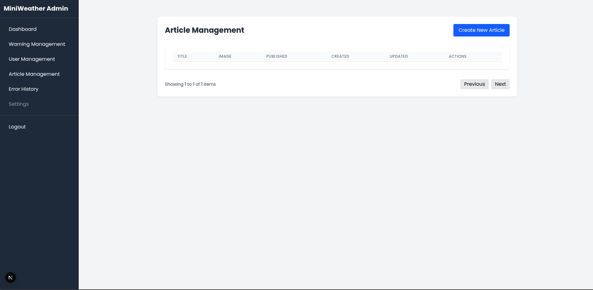
➕ 2. Tambahkan Artikel Baru
Klik tombol Create New Article untuk membuka form penambahan artikel.
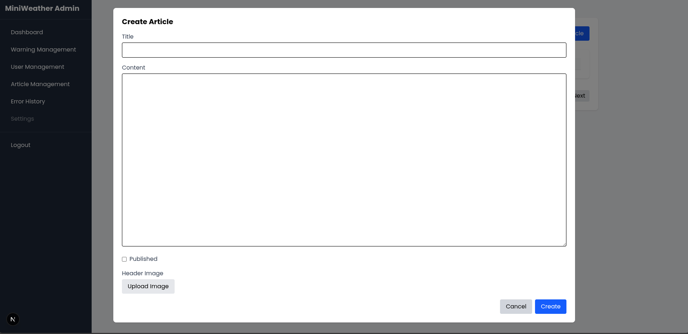
📝 3. Isi Form Artikel
Lengkapi formulir berikut:
- Title: Judul artikel
- Content: Isi artikel (boleh panjang)
- Header Image: Gambar utama artikel
- Published: Centang jika ingin artikel langsung ditampilkan di dashboard publik
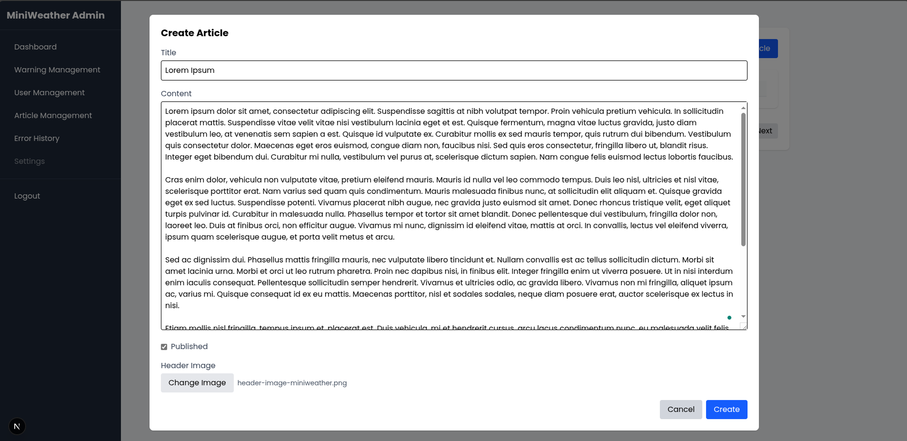
💾 4. Simpan Artikel
Klik tombol Create untuk menyimpan artikel. Jika berhasil, artikel akan tampil di tabel manajemen seperti ini:
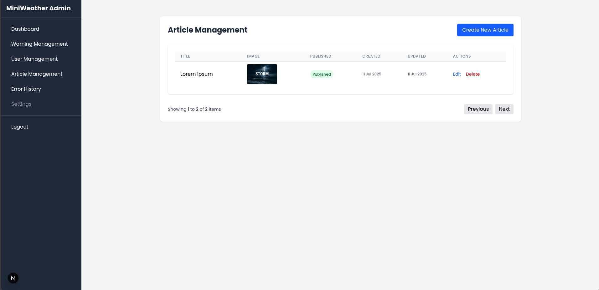
🌐 5. Artikel Tampil di Halaman Publik
Artikel yang sudah berstatus Published akan langsung muncul di halaman publik dalam bagian Artikel Terbaru.
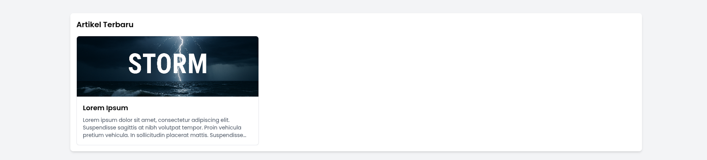
🛠️ Catatan Teknis
- Endpoint backend:
POST /v1/articles
Authorization: Bearer <admin-token>
- Gambar yang diunggah akan disimpan dan ditautkan ke artikel
- Artikel yang belum dicentang sebagai “Published” hanya akan disimpan, tapi tidak ditampilkan di dashboard publik
Dengan fitur ini, admin dapat menyampaikan informasi penting atau edukatif kepada pengguna secara menarik dan informatif.
Manage Warnings
Halaman ini menjelaskan cara menambahkan dan mengelola peringatan dini (warning) pada sistem Miniweather Station Dashboard. Warning yang ditambahkan oleh admin akan ditampilkan di halaman publik untuk memberikan informasi penting kepada pengguna.
✅ 1. Akses Halaman Warning Management
Setelah login sebagai admin, klik menu Warning Management di sidebar.
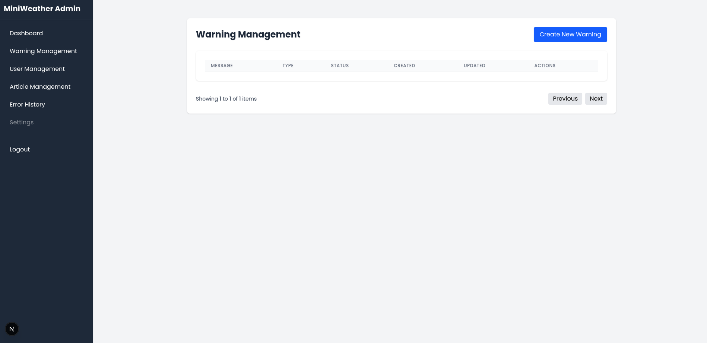
➕ 2. Tambahkan Warning Baru
Klik tombol Create New Warning untuk membuka form input warning.
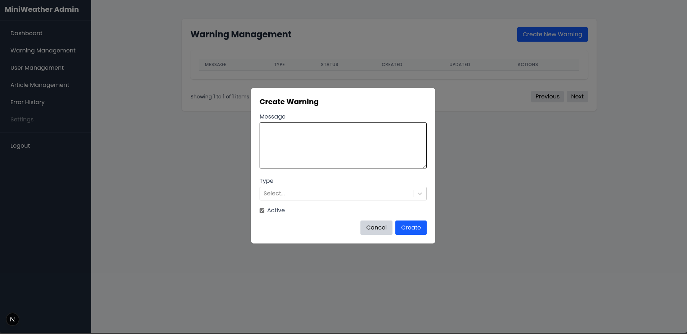
📝 3. Isi Form Warning
Isi formulir dengan informasi berikut:
- Message: Isi pesan peringatan (misal: Hati-hati akan potensi badai di sekitar Pantai Wohkudu)
- Type: Pilih tipe peringatan dari daftar berikut:
- General
- Weather
- Tsunami
- Earthquake
- Volcano
- Flood
- Status: Centang “Active” untuk langsung menampilkan warning

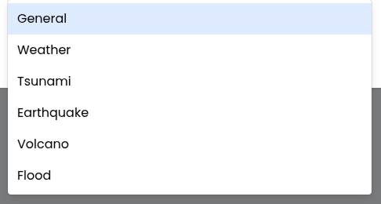
💾 4. Simpan dan Verifikasi
Klik tombol Create untuk menyimpan peringatan. Setelah berhasil, warning akan muncul di tabel daftar seperti berikut:
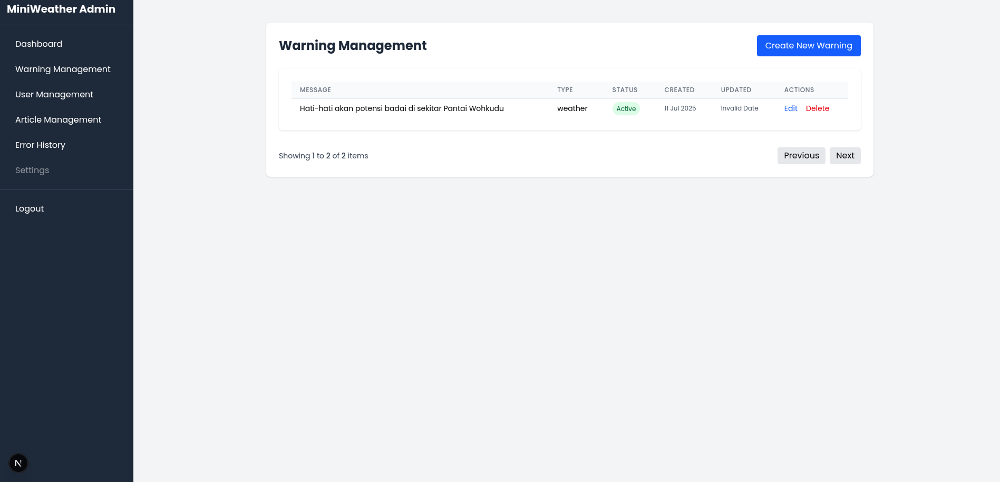
🌐 5. Tampil di Dashboard Publik
Peringatan yang aktif akan langsung ditampilkan di bagian “Peringatan Dini” pada halaman dashboard publik.
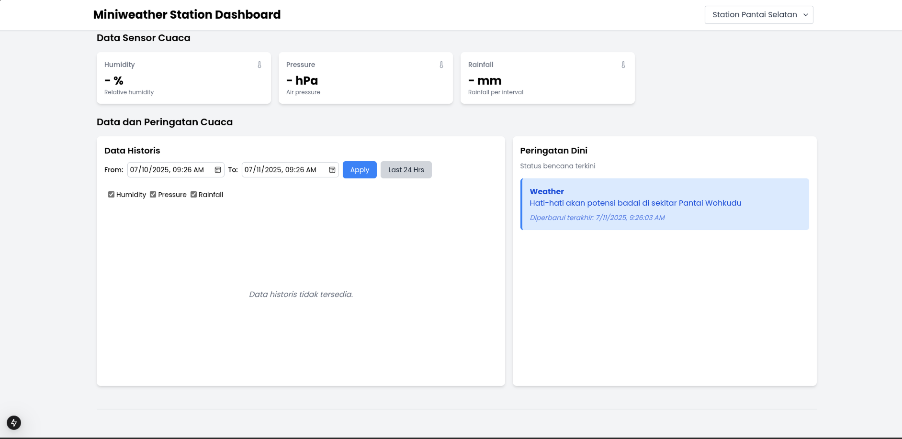
🛠️ Catatan Teknis
- Warning disimpan di database melalui endpoint:
POST /v1/warnings
Authorization: Bearer <admin-token>
Content-Type: application/json
- Tipe warning digunakan untuk styling dan filtering pada frontend
- Hanya warning yang berstatus active yang akan ditampilkan di dashboard publik
Dengan fitur ini, admin dapat memberikan peringatan penting seperti cuaca ekstrem, gempa, atau banjir kepada pengguna secara cepat dan real-time.
Manage Users
Fitur manajemen pengguna digunakan oleh SuperAdmin untuk menambahkan, menghapus, atau mengatur akun pengguna (User atau Admin) yang dapat mengakses sistem Miniweather Station Dashboard.
✅ 1. Akses Menu User Management
Klik menu User Management dari sidebar untuk melihat daftar pengguna saat ini.
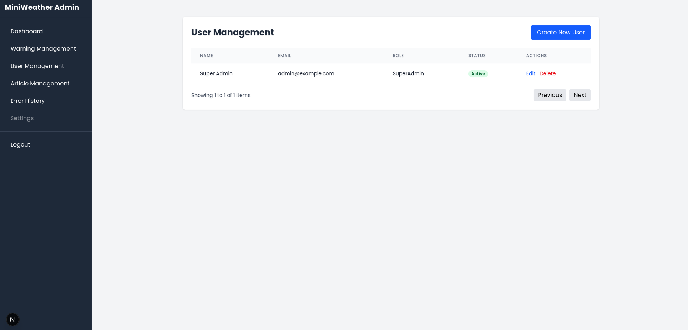
➕ 2. Tambahkan Pengguna Baru
Klik tombol Create New User di kanan atas untuk membuka form penambahan.
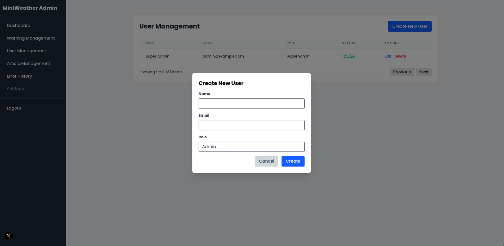
📝 3. Isi Form Pengguna
Isi formulir berikut:
- Name: Nama pengguna
- Email: Email pengguna
- Role: Pilih peran
Admin,SuperAdmin, atauUser
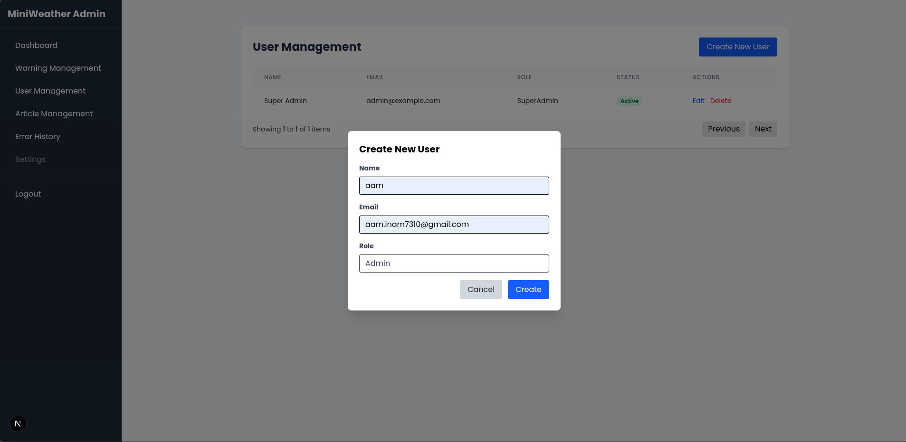
⚠️ Setelah mengisi, klik tombol Create
📧 4. Cek Email Pengguna
Setelah akun dibuat, sistem akan mengirimkan email otomatis ke alamat email pengguna yang berisi kredensial login.
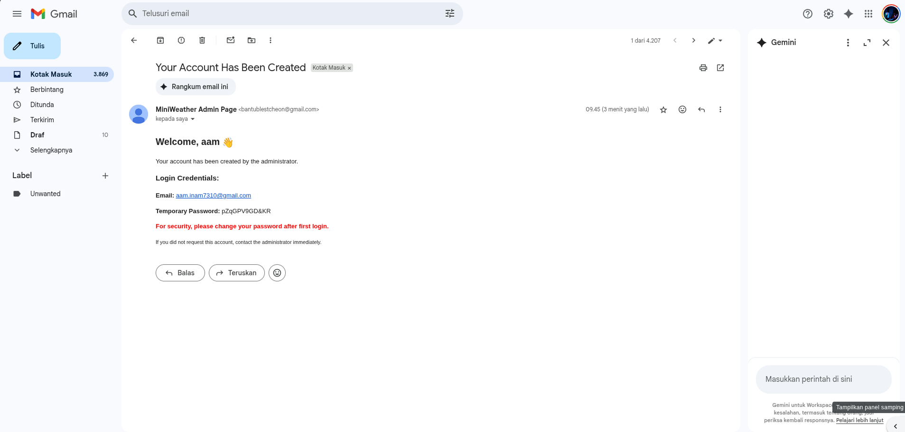
Pengguna akan menerima email dengan isi seperti:
- Email: alamat email terdaftar
- Temporary Password: sandi awal untuk login
- Catatan: fitur ganti password masih dalam pengembangan
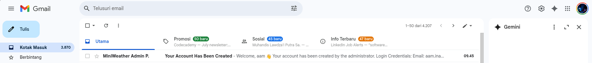
✅ 5. Verifikasi Data di Tabel
Setelah berhasil dibuat, pengguna akan muncul di daftar manajemen dengan status:
- Active: Jika sudah aktif
- Inactive: Jika akun belum digunakan untuk login pertama kali
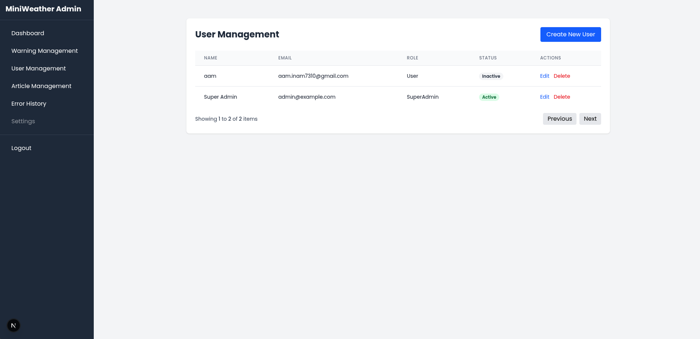
🛠️ Catatan Teknis
- Password awal bersifat sementara dan dikirim via email
- Akun dengan role
SuperAdminmemiliki akses penuh, termasuk pengelolaan user - Hanya
SuperAdminyang dapat membuat akun baru
Dengan fitur ini, pengelolaan akun pengguna menjadi lebih terstruktur dan aman. Admin dapat mengatur siapa saja yang dapat menggunakan sistem, serta melakukan kontrol akses berdasarkan peran.
FAQ
Q: What happens if Hyperbase is offline?
A: The system caches all incoming data in Redis and retries sending it once Hyperbase is reachable again.
Q: Can multiple devices be onboarded at once?
A: Currently, onboarding is manual per device, but bulk import may be added in future updates.
Q: Is this system open-source?
A: Yes. Contributions are welcome.
Database & Architecture
Sistem ini menggunakan dua jenis database dan memiliki dua level arsitektur yang perlu dipahami agar implementasi dan integrasi berjalan dengan benar.
1. Standalone Architecture (Sistem Sendiri)
Pada desain awal, sistem berjalan menggunakan PostgreSQL sebagai database utama.
Semua tabel inti seperti onboarding_devices, device_sensors, users, articles, dan lain-lain berada dalam PostgreSQL.
Data sensor langsung diproses dan disimpan ke tabel-tabel tersebut tanpa perantara.
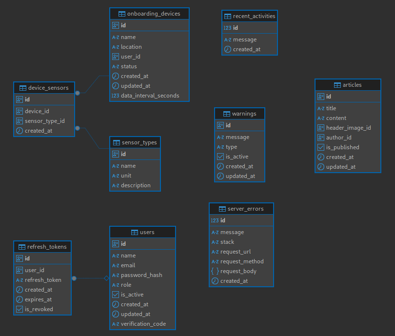
2. Integrated Architecture (Sistem Terintegrasi dengan Hyperbase)
Untuk sistem yang siap produksi dan skalabilitas besar, arsitektur diperluas dengan mengintegrasikan Hyperbase.
Hyperbase digunakan untuk menyimpan raw data dari perangkat IoT sebelum data itu diolah dan dimasukkan ke PostgreSQL.
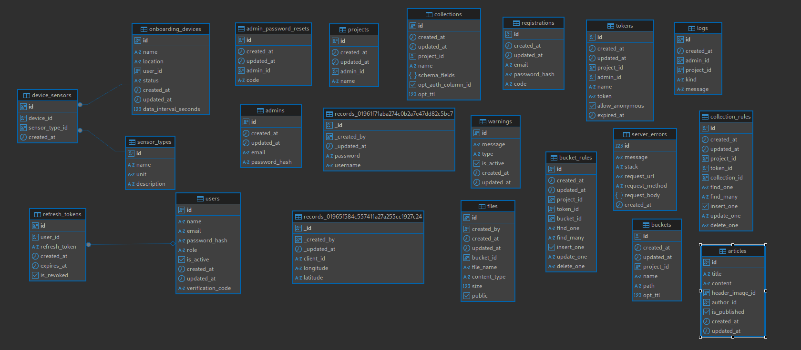
Penjelasan alur integrasi:
- Perangkat IoT mengirim data raw melalui MQTT ke backend.
- Backend menyimpan data mentah di Hyperbase sebagai data historis yang scalable.
- Proses ETL (Extract, Transform, Load) memindahkan data yang sudah diproses ke PostgreSQL untuk kebutuhan query cepat.
- Dashboard publik dan panel admin tetap hanya membaca data dari PostgreSQL.
3. Relasi Antar Tabel (PostgreSQL)
Beberapa tabel utama di PostgreSQL:
| Tabel | Deskripsi Singkat |
|---|---|
onboarding_devices | Menyimpan daftar perangkat yang terdaftar |
device_sensors | Menyimpan jenis sensor yang terpasang pada setiap perangkat |
sensor_types | Master data jenis sensor |
users | Data admin/operator, termasuk autentikasi |
articles | Konten informasi dan edukasi |
warnings | Peringatan dini dari sistem |
server_errors | Log error yang tercatat |
refresh_tokens | Token refresh untuk autentikasi |
API Endpoints
Dokumentasi ini berisi daftar endpoint yang tersedia pada sistem Mini Weather Station Dashboard.
Endpoint-endpoint ini digunakan oleh dashboard publik, panel admin, dan juga untuk komunikasi dengan perangkat IoT melalui protokol MQTT (untuk beberapa kasus khusus).
1. Postman Collection
Untuk memudahkan eksplorasi dan pengujian API, kamu bisa mengimpor Postman Collection berikut:
Catatan:
Link tersebut berisi semua endpoint lengkap dengan contoh request, response, dan environment yang diperlukan.